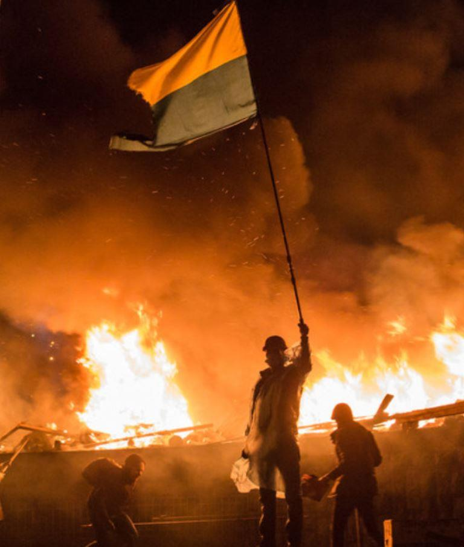
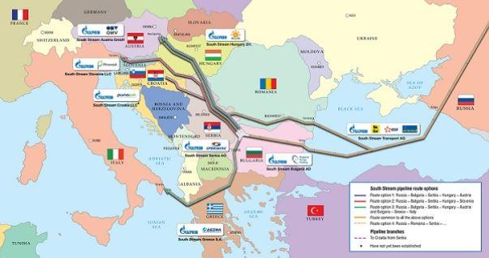
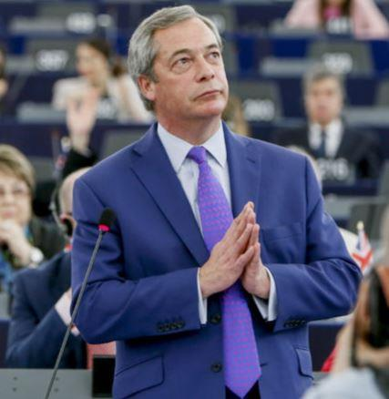
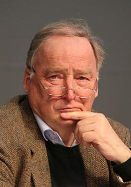
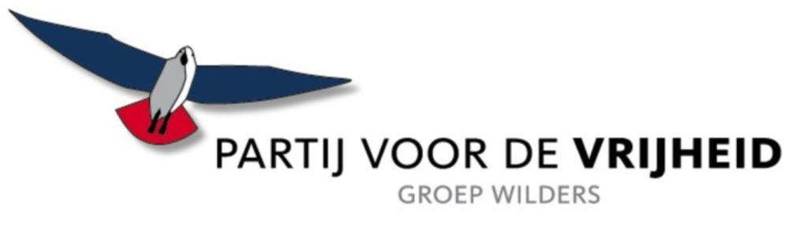
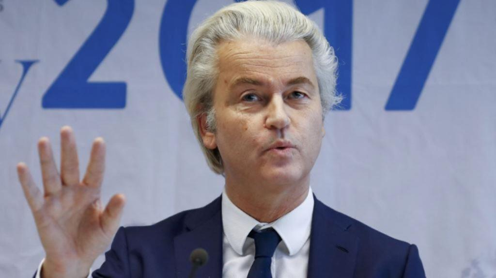
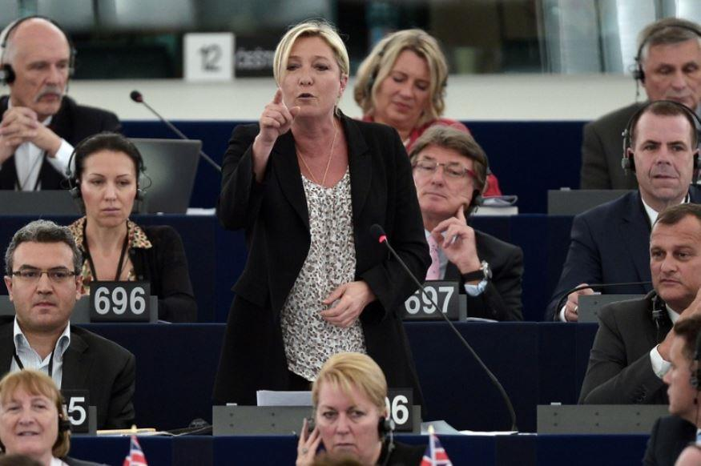

La crise ukrainienne, qui a débuté à la fin de 2013-2014, est interprétée différemment par les experts, les forces politiques, certains États individuels et les institutions supranationales. Elle est présentée comme une suite de processus politiques ukrainiens internes liés au mécontentement du grand public envers le pouvoir corrompu qui ont engendré les événements révolutionnaires [17] et, comme une suite naturelle, des confrontations géopolitiques alimentées par des centres de pouvoir externes à Kiev, en particulier ceux de Washington, qui voulaient arracher l'Ukraine de la sphère d’influence politique de la Russie, et également de ceux de Moscou, qui cherchaient à impliquer Kiev dans ses propres projets d'intégration ou, au moins, d’entretenir la statu quo permanent de l’État dans la politique étrangère [7].
L'Union européenne, sous le drapeau de laquelle se passait l'Euro-Maïdan de Kiev, prend une position intermédiaire dans le cadre de ces interprétations. L'objectif de Bruxelles dans l’orientation ukrainienne était d’avoir un accès maximum aux marchés du pays ce qui était en opposition avec les intérêts russes. Pourtant la confrontation avec Moscou, en tant que telle, n'a pas été décisive pour l'UE [9]. D'autre part, après le coup d'État, qui a provoqué un conflit armé dans le Donbass, exacerbé par la récession économique dans tout le pays, l'Ukraine a cessé d'être attrayante pour Bruxelles, comme c’eut été dans une période de stabilité.
Les partis populistes de droite et eurosceptiques deviennent une force politique majeure au sein de l'UE, qui n’hésite pas à critiquer les actions de Bruxelles dans l’orientation ukrainienne. Tandis qu’il y a une dizaine d'années, les droites eurosceptiques étaient à la périphérie de la vie politique de l'Union européenne, tel un phénomène plutôt marginal et « dissident » [27], la situation a changé au cours des dernières années. Ainsi, lors des élections européennes de 2014, les partis eurosceptiques ont pris les premières places en Grande-Bretagne, en Hongrie, au Danemark et en France. Dans le contexte de la crise migratoire, qui est devenue encore plus évidente à partir de 2015, leur popularité a augmenté encore plus, en se consolidant en 2016 après le vote du Brexit en Grande-Bretagne. À partir d'un phénomène marginal, l’euroscepticisme est d'abord devenu un phénomène toléré [2], puis a évolué en une « nouvelle norme » de l'Union européenne [14]. En dépit de l'histoire électorale instable des populistes de droite, leurs exigences idéologiques et politiques, notamment celles liées au resserrement de la politique migratoire et la réforme de l'UE, entrent progressivement dans le courant dominant politique des principaux pays européens et sont souvent interceptées par des « anciens » partis [1].
Dans cet article, nous analysons une interprétation de la crise ukrainienne dans la rhétorique des cinq partis eurosceptiques de l'UE : le Parti de la liberté d'Autriche (FPÖ), qui fait partie du nouveau gouvernement de coalition du pays ; le Parti pour l'indépendance du Royaume-Uni (UKIP), principal moteur du Brexit en Grande-Bretagne ; « Alternative pour l'Allemagne » (AfD), qui a le troisième plus gros groupe au Bundestag ; le Parti pour la liberté du Pays-Bas (PVV), la deuxième fraction du parlement du pays ; Le Front National français (FN), dont le leader Mme Le Pen est arrivée deuxième à l'élection présidentielle en 2017.
Selon H.-C. Strache, Président du FPÖ autrichien, les agences de renseignement étrangères et les organisations à but non lucratif qui finançaient les groupes qui ont organisé le coup d'État ont jouaient un rôle actif dans les événements sur le Maïdan et ont mis au pouvoir des forces qui ignoraient les intérêts de la minorité russe. [25]
M. Strache considère l'Ukraine comme un « champ de confrontation politico-militaire et économique » entre les États-Unis et la Russie. Pour l'Autriche ce conflit est « une guerre étrangère », dont le pays doit rester à l'écart avec un rôle diplomatique d'intermédiaire neutre [15]. Le chef du Parti a remarqué que « la guerre des sanctions » en Europe peut entraîner une nouvelle édification du « rideau de fer », qui sera justement appelé « le mur ukrainien ». En outre, contrairement au premier édifié par l'Union soviétique et ses alliés après la Seconde Guerre mondiale, ce nouveau « rideau » sera sur la conscience de l'Occident [16].
Le conflit met également en péril la sécurité énergétique de l'Autriche qui reçoit du gaz russe à travers le territoire de l'Ukraine [12]. Les « eurocrates » à Bruxelles, guidés par leurs propres considérations politiques font ainsi obstacle au projet « South Stream », qui assurerait un approvisionnement régulier en gaz en Autriche [26].
Suivant les Autrichiens, la crise ukrainienne a montré l'hypocrisie des dirigeants de l'UE et de la chancelière allemande Angela Merkel : Bruxelles a cherché à briser les « liens historiques profonds » entre Moscou et Kiev, forçant ce dernier à un accord d'association avec l'UE, mais également, Angela Merkel qui « soutenait depuis longtemps les forces antirusses en Ukraine » [20].
À la fin de mars 2014, après le référendum en Crimée, N. Farage, le chef du Parti pour l'indépendance du Royaume-Uni (UKIP), a pris la parole au Parlement européen et a accusé les dirigeants de l'UE « d’expansionnisme », en déclarant que Bruxelles avait « du sang sur les mains ». Selon l'homme politique, Bruxelles, par des organisations à but non lucratif financées par elles-mêmes, « chérissaient les jeunes Ukrainiens par des idées irréalisables d'un avenir européen », ce qui a conduit à l'effusion de sang et le « renversement du président légitime », ainsi qu’à la réaction « profondément prévisible » de Moscou, « d’annexer une partie de l'Ukraine » [19].
Selon l'UKIP, l'intégration européenne forcée en Ukraine a entraîné ultérieurement une désintégration dans la société et la poursuite de la guerre civile dans le pays, qui devrait être « tampon neutre » entre la Russie et l'OTAN [11].
L’UKIP a vivement critiqué la déclaration du représentant du Ministère de la Défense de la Grande-Bretagne qui a déclaré que l'Ukraine peut compter sur l'aide militaire de Londres pour protéger sa propre indépendance. Selon le parti, il est imprudent de donner la garantie militaire au pays « de facto dans l’état de guerre avec la Russie » : cela ne sert pas les intérêts britanniques, et, en principe, n'est pas possible en raison du sous-financement de l'armée britannique [18].
Le sujet ukrainien est fondamental pour le Parti « Alternative pour l'Allemagne » dans le contexte histoire de cette force politique [1]. En 2015, la scission « ukrainienne » a produit des divergences dans le Parti : B. Lucke, le leader de l'Alternative, a soutenu les sanctions antirusses liées au référendum de Crimée et à la guerre dans le Donbass, se mettant en opposition à l’avis de la plupart des membres du Parti. Finalement, la victoire a été remportée par les opposants aux sanctions.
Selon M. Frohnmeier, le leader de la section jeunesse d'Alternative, en février 2014, l'Ukraine a été « capturée » : « Le gouvernement légitime a été renversé avec la participation directe de l'Occident. En mars 2014, un référendum a eu lieu en Crimée, où la péninsule, à travers des procédures démocratiques, a fait un choix pour l'adhésion à la Fédération de Russie. Le Donbass souhaitait plus d'autonomie vis-à-vis de Kiev. L'Ukraine y a répondu par la guerre » [1].
Selon le parlementaire J. Urban, l’accord d'association entre l'UE et l'Ukraine « a divisé le peuple ukrainien, a causé des manifestations et des affrontements sanglants à Kiev, à Odessa et dans d'autres villes … la guerre civile » [1].
Alexander Gauland, co-président de l'Alternative, a annoncé que cet accord était « ouvertement dirigé contre la Russie », et cela sans aucun profit pour les pays européens. Conformément à la version du politicien, « l’intégration européenne forcée de Kiev » menée par les fonctionnaires de l'UE, montre que cette institution agit pour ses propres intérêts qui sont de moins en moins associés à l'opinion des Européens ordinaires qui ne sont pas intéressés par l'élargissement de l'UE [13].
Selon le Parti, le soutien inconditionnel occidental à l'Ukraine ne bénéficie pas de la sécurité européenne qui ne doit pas être assurée par une mobilisation de l'Occident contre la Russie, mais, au contraire, par la pleine coopération avec Moscou [21].
En mars 2014, R. de Roon, speaker pour la défense du Parti pour la liberté du Pays-Bas, a déclaré que « l'opération militaire russe en Crimée est une violation flagrante de la souveraineté ukrainienne ». Dans le même temps, les Pays-Bas ne sont pas intéressés ni par un conflit avec la Russie ni par une association avec l'Ukraine, « l'État en faillite ». Selon le Parti, le conflit ukrainien devrait inciter les dirigeants de l'UE à l'auto-analyse sur les objectifs et les méthodes de son propre travail et sur la pertinence de la soutenance de manifestations politiques dans d'autres pays [22].
Geert Wilders, le chef du Parti, a attiré l'attention sur le fait que « les politiciens européens tenaient des propos à Kiev devant des gens dont la moitié étaient des fascistes ». Les Européens leur ont promis « l’aide et le soutien de l'Occident », en cela ils « semaient pratiquement la haine » [10]. Selon le Parti, après la fin de la Guerre froide, l'Occident a cessé de respecter un équilibre des intérêts avec la Fédération de Russie, en promettant à l'Ukraine l'adhésion à l'UE et à l'OTAN [23].
Les eurosceptiques du Pays-Bas caractérisent l'Ukraine comme un pays étant « abandonné depuis des décennies sous la domination des oligarques », dont l'un d'entre eux, P. Porochenko, est devenu aujourd'hui président. Selon le Parti pour la liberté, le pays n'a pas de perspectives réalistes pour mener des réformes d’anti-corruption et faire partie de l'Europe. La seule chose que l'UE devrait attendre de l'Ukraine, ce sont les travailleurs migrants et les éléments criminels [24].
Selon le Parti, en Ukraine, il y a une guerre civile qui doit être achevée par les citoyens du pays, et l'Ukraine devrait « rester neutre, comme le tampon entre l’Europe et la Russie » [4].
Au tout début des événements sur le Maïdan, en décembre 2014, Marine Le Pen, la chef du « Front national » français, a attiré l'attention sur l'hypocrisie des dirigeants de l'UE « fondés sur l'avis de quelques dizaines de milliers de manifestants, ayant déclaré l'illégitimité du président ukrainien ». Le Pen rappelle « qu’une année avant, un million et demi d’habitants sont sortis contre F. Hollande [Président de la France à l’époque], et je n'ai pas entendu que l'UE a exigé la démission de Hollande ou l'a accusé d’illégitimité » [5].
Selon la politicienne, une partie des citoyens ukrainiens regardaient vers la Russie et les autres rêvaient d’avenir avec l'UE. Les politiciens européens « ont jeté de l'huile sur le feu dans cette discorde » et « ont créé les conditions du danger d’une guerre civile », en donnant à des Ukrainiens « les promesses irréalistes » d’être un membre de l'UE [8].
Peu de temps après l'éviction du Président Viktor Ianoukovitch, « le Front national » a publié une déclaration : « À Kiev, il n'y a pas d'autorité légitime, au pouvoir sont venus des radicaux qui violent les droits des russophones, restreignent la liberté d'expression, les droits de l'Église orthodoxe du Patriarcat de Moscou et menacent l'autonomie de Crimée » (Comment Marine Le Pen a rompu avec les nationalistes ukrainiens // BBC). Le Parti a déclaré le référendum de Crimée légitime et logique parce que les gens « vivant dans la peur, sont tombés dans les bras du pays de leur origine » [3].
Ainsi, les cinq partis indiqués dans l'article envisagent la crise ukrainienne non pas comme une fin en soi, mais dans le contexte de la critique des dirigeants de l'UE comme un conflit dans les relations entre l'Occident et la Russie. L’UE, en poursuivant sa politique d'expansion continue, tient compte insuffisamment des conséquences négatives de l'accélération de ces processus. Bruxelles, selon les eurosceptiques, ne correspond pas à ses propres valeurs démocratiques revendiquées dans leur travail : elle ne repose pas sur une volonté des Européens ordinaires, soutenant de moins en moins l'expansion, ou sur l’opinion des Ukrainiens, dont certains d’eux sont orientés vers l'Occident, tandis que les autres voient leur avenir avec la Russie. Les intérêts de Moscou, qui a des liens culturels et historiques de longue durée avec Kiev, ont été ignorés par les dirigeants de l'UE, ce qui a provoqué une réaction forte et inattendue pour Bruxelles de la part de la Russie, qui aurait pu être évitée en recherchant un équilibre des intérêts.
L'UE, selon les eurosceptiques, a exacerbé la scission déjà existante dans la société ukrainienne et a même poussé le pays à la guerre civile. Les sanctions antirusses imposées par Bruxelles ne font qu'aggraver la crise, menaçant, en plus de tout le reste, la sécurité des États européens, y compris dans le domaine énergétique. La normalisation des relations avec la Fédération de Russie pour l'Occident, selon les eurosceptiques, est beaucoup plus importante que n'importe quels aspects des relations avec l'Ukraine qui n'a pas de perspective réaliste d'adhésion à l'UE ou à l'OTAN.
S.B.
Références
1. Byshok S.O. Novaja Evropa Vladimira Putina. Uroki Zapada dlja Rossii [The New Europe of Vladimir Putin. The West’s lessons for Russia]. M., Knizhnyj mir, FRIGO «Narodnaja diplomatija», 2017. 608 s.
2. Vajnshtejn G.I. Evroskepticizm: novyj faktor evropejskoj politiki [Europscepticism: a new factor in European politics] // Mirovaja jekonomika i mezhdunarodnye otnoshenija [World economy and international relations]. 2015, no. 8, pp. 40-48.
3. Glava francuzskogo Nacfronta priznala rezul'taty krymskogo referenduma [The head of the French National Front recognized the results of the Crimea referendum]. In: RIA Novosti. [17.03.2014]. Available at: https://ria.ru/world/20140317/999854083.html (accessed: 11.02.2018).
4. Gollandskij politik: Niderlandy jekonomicheski vyigrajut pri vyhode iz ES [Dutch politician: The Netherlands would gain economically if it left the EU]. In: RT. [20.06.2016]. Available at: https://russian.rt.com/article/308549-gollandskii-politik-niderlandy-ekonomicheski-vyigrayut-pri-vyhod (accessed: 11.02.2018).
5. «ES ne imeet prava chego by to ni bylo trebovat'» [interv'ju s M. Le Pen] [“The EU has no right to require anything” (interview with M. Le Pen)]. In: Vzgljad. [13.12.2013]. Available at: https://vz.ru/politics/2013/12/13/664122.html (accessed: 11.02.2018).
6. Kak Marin Le Pen porvala s ukrainskimi nacionalistami [How Marine Le Pen broke off with Ukrainian nationalists]. In: BBC. [03.06.2015]. Available at: http://www.bbc.com/russian/international/2015/06/150603_ukraine_france_nationalists (accessed: 11.02.2018).
7. Colton T., Charap S. Pobeditelej net: ukrainskij krizis i razrushitel'naja bor'ba za postsovetskuju Evraziju [No winners: the Ukraine crisis and the ruinous contest for post-Soviet Eurasia] // Rossija v global'noj politike. [Russia in global politics.] 2017. Cpecvypusk. Available at: http://globalaffairs.ru/media/docs/charap_book_read.pdf (accessed: 26.02.2018).
8. Marin Le Pen: Ukraina v Evrosojuz ne vojdjot, ne nuzhno rasskazyvat' skazki [Marine Le Pen: Ukraine won’t join the EU, it’s time to stop telling fiction]. In: RT. [07.06.2014]. Available at: https://russian.rt.com/article/35446 (accessed: 11.02.2018).
9. Mitrofanova I.V., Tihonovich Je.A., Rakutina N.M. Torgovye otnoshenija stran Evrosojuza i Ukrainy v 2015-2016 gg. [Trade relations between EU states and Ukraine in 2015-2016] // Obshhestvo: politika, jekonomika, pravo. [Society: politics, economics, law.] 2017. №5. P. 32-37.
10. Dutch rightist Wilders blames EU for Ukraine crisis; hints at UKIP alliance // Reuters. 17.04.2014. Available at: https://uk.reuters.com/article/uk-eu-election-dutch-wilders/dutch-rightist-wilders-blames-eu-for-ukraine-crisis-hints-at-ukip-alliance-idUKBREA3G1CT20140417 (accessed: 11.02.2018).
11. EU-Ukraine Association Agreement is leading us into war - Nathan Gill MEP // UKIPMEPs. 16.09.2014. Available at: http://www.ukipmeps.org/articles_882_EU-Ukraine-Association-Agreement-is-leading-us-into-war---Nathan-Gill-MEP.html (accessed: 11.02.2018).
12. FPÖ fordert Sondergipfel wegen drohender Gasknappheit // FPÖ. 13.09. 2014. Available at: https://www.fpoe.at/artikel/fpoe-fordert-sondergipfel-wegen-drohender-gasknappheit/ (accessed: 10.02.2018).
13. Gauland: Europa emanzipiert sich dank der Niederlande // AfD. 07.04.2016. Available at: https://www.afd.de/gauland-europa-emanzipiert-sich-dank-der-niederlande/ (accessed: 11.02.2018).
14. Harding G. Euroscepticism: The EU’s new normal // EUobserver. 09.06.2016. Available at: https://euobserver.com/opinion/133747 (accessed: 10.02.2018).
15. HC Strache: Faymanns "einsame Entscheidung" gegen Russland ist Verfassungsbruch // FPÖ. 24.09.2014. Available at: https://www.fpoe.at/artikel/hc-strache-faymanns-einsame-entscheidung-gegen-russland-ist-verfassungsbruch/ (accessed: 10.02.2018).
16. HC Strache: Freiheitliche sind der Neutralität verpflichtet // FPÖ. 16.09.2014. Available at: https://www.fpoe.at/artikel/hc-strache-freiheitliche-sind-der-neutralitaet-verpflichtet/ (accessed: 10.02.2018).
17. Marples D.R., Mills F.V. (eds.). Ukraine’s Euromaidan: Analyses of a Civil Revolution, Stuttgart: ibidem Verlag; New York: Columbia University Press, 2015.
18. MoD Official - “Ukraine could count on any possible assistance in the pursuit of the Ukrainian independence” - UKIP's Mike Hookem Demands Answers // UKIP. Available at: http://www.ukip.org/mod_official_ukraine_could_count_on_any_possible_assistance_in_the_pursuit_of_the_ukrainian_independence_ukip_s_mike_hookem_demands_answers (accessed: 11.02.2018).
19. Nigel Farage on the EU's expansionist foreign policy // UKIP MEPs. 27.03.2014. Available at: http://www.ukipmeps.org/news_873_Nigel-Farage-on-the-EUs-expansionist-foreign-policy.html (accessed: 11.02.2018).
20. Obermayr: Vorschlag zu Freihandelsabkommen mit Russland - Warum erst jetzt Frau Merkel? // FPÖ. 23.01.2015 Available at: https://www.fpoe.at/artikel/obermayr-vorschlag-zu-freihandelsabkommen-mit-russland-warum-erst-jetzt-frau-merkel/ (accessed: 10.02.2018).
22. PVV: Nederland moet over Oekraïne geen confrontatie aangaan met Rusland // PVV. 04.03.2014. Available at: https://www.pvv.nl/37-fj-related/raymond-de-roon/7444-pvv-nederland-moet-over-oekraine-geen-confrontatie-aangaan-met-rusland.html (accessed: 11.02.2018).
23. PVV: welk belang heeft de Nederlander bij sancties tegen Rusland? // PVV. 12.03.2014. Available at: https://www.pvv.nl/37-fj-related/raymond-de-roon/7463-pvv-welk-belang-heeft-de-nederlander-bij-sancties-tegen-rusland.html (accessed: 11.02.2018).
24. Spreektekst plenair debat goedkeuring associatieakkoorden met Moldavië, Georgië en Oekraïne // PVV. 01.04.2015. Available at: https://www.pvv.nl/75-fj-related/harm-beertema/8258-spreektekst-plenair-debat-goedkeuring-associatieakkoorden-met-moldavie-georgie-en-oekraine.html (accessed: 11.02.2018).
25. Strache: "Nicht Russland ist Aggressor der letzten Jahrzehnte" // Die Presse. 24.03.2015. Available at: https://diepresse.com/home/politik/innenpolitik/4692491/Strache_Nicht-Russland-ist-Aggressor-der-letzten-Jahrzehnte (accessed: 10.02.2018).
26. Strache: Blockadehaltung der EU in Sachen South Stream ist wirtschaftliches Harakiri // FPÖ 02.12.2014. Available at: https://www.fpoe.at/artikel/strache-blockadehaltung-der-eu-in-sachen-south-stream-ist-wirtschaftliches-harakiri/ (accessed: 10.02.2018).
27. Taggart P. A Touchstone of Dissent: Euroscepticism in Contemporary Western European Party Systems. European Journal of Political Research. Vol. 33, issue 3, April 1998, pp. 363-388.
Partager cette page